Dronelivery
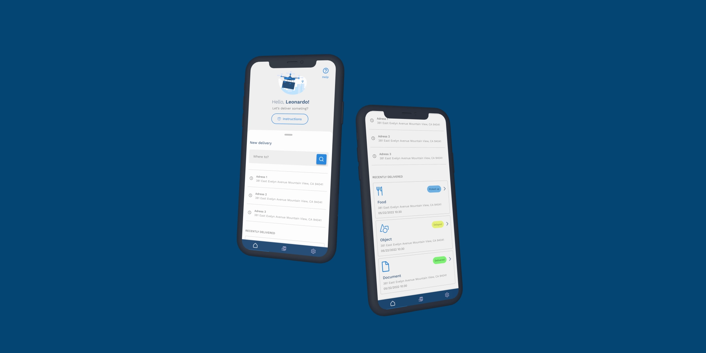
Mobile
Study case
Project
Designing a mobile experience that makes scheduling a drone delivery feel simple, trustworthy, and predictable.
Dronelivery is a conceptual product exploring how first-time users could confidently schedule autonomous deliveries through a guided mobile experience.
Goals
- Reduce friction during delivery scheduling
- Build user confidence throughout the process
- Make autonomous delivery feel transparent and predictable
Personas
In pursuit of a thorough understanding of the app's target users, a series of user interviews were conducted. Participants from various backgrounds were engaged to gain insights into their needs, preferences, and pain points, culminating in the identification and deep comprehension of the personas expected to utilize the application.
| User Group | Primary Need | Challenge |
|---|---|---|
| Professionals | Fast Document Delivery | Need reliability and speed |
| Early adopters | Explore new technology | Need reassurance throughout the experience |
The competitors
After conducting a comprehensive competitor's audit, the findings revealed several key insights:
Key findings
- Mobile experiences weren't optimized for quick delivery booking.
- Most booking flows required unnecessary steps.
- Users received little guidance during the process.
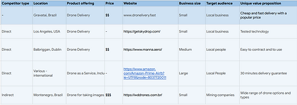
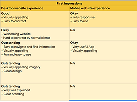
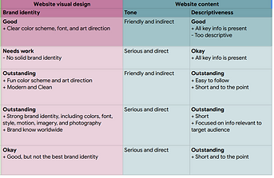
Wireframing
- Users weren't sure how to start a delivery.
- Scheduling interactions needed simplification.
- Users expected more guidance throughout the process.
Drag to view all
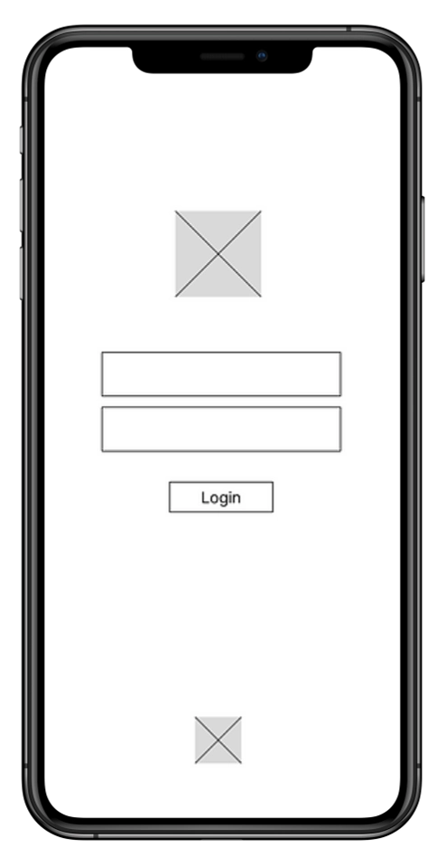
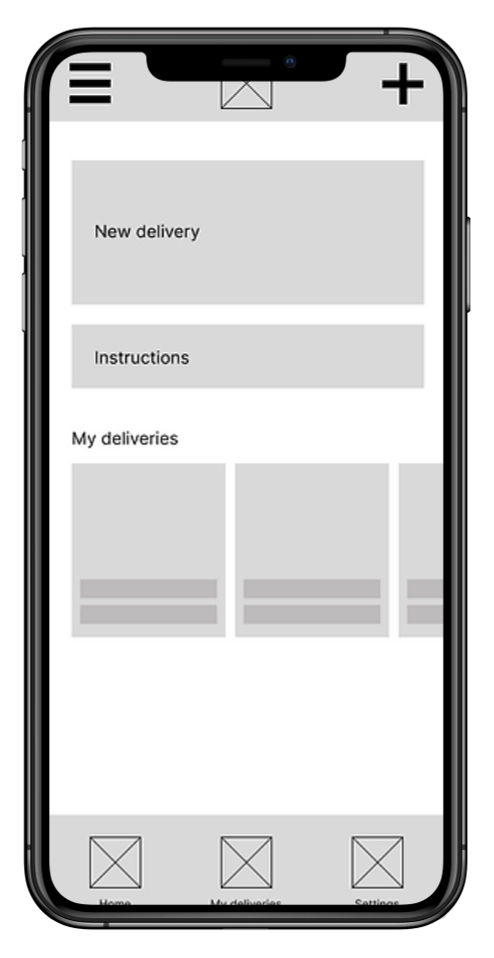
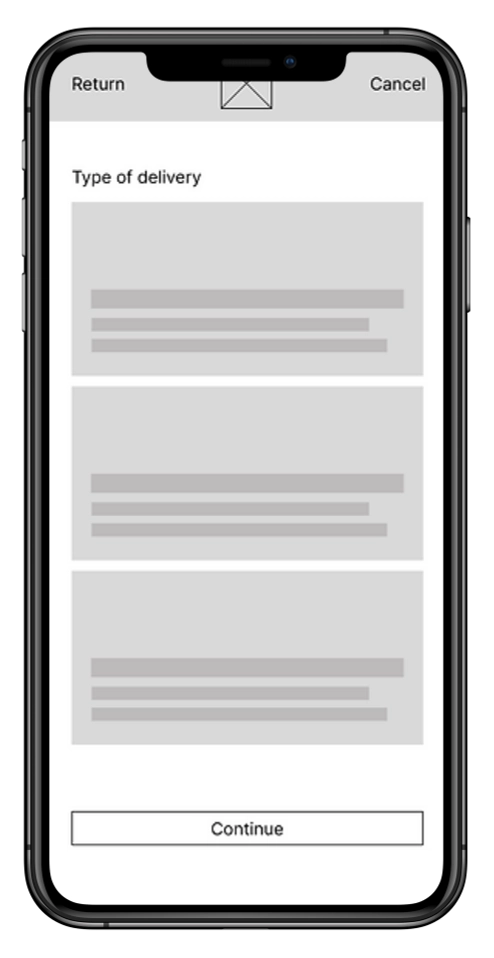
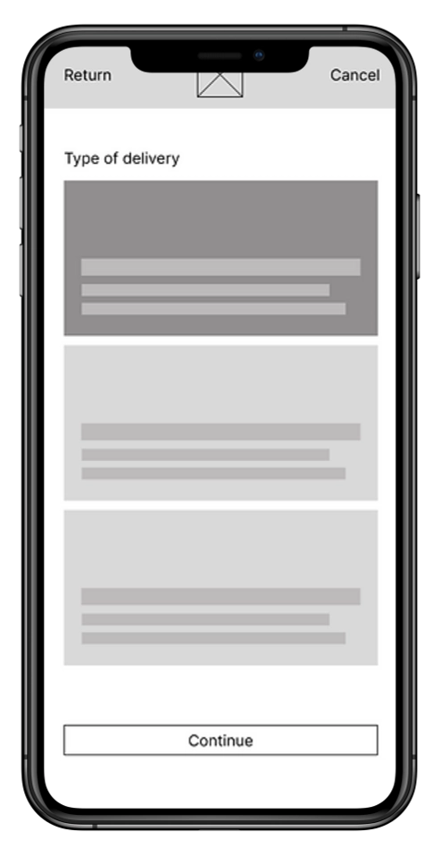
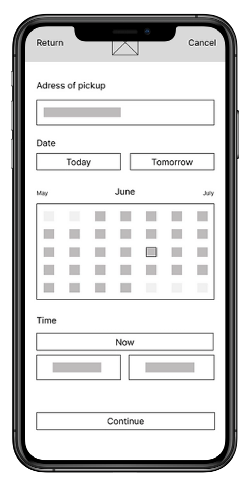
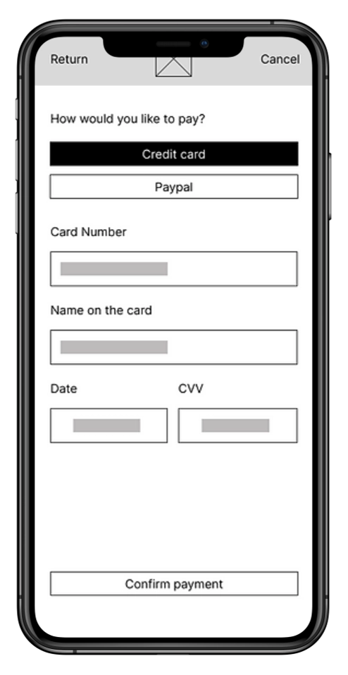
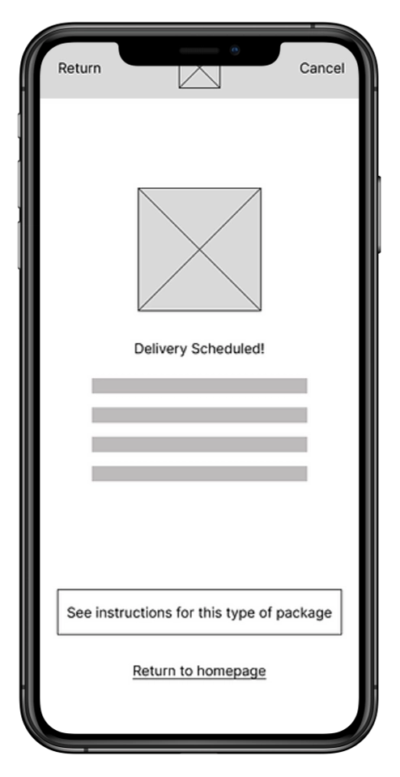
Booking Flow
Goal:Successfully use the drone delivery service to deliver something important.
| ACTION | Download the app | Choose date and time to pick up | Follow instructions for the package | Follow instructions to handle package to the drone | Confirm the delivery to the drone | Follow up on updates of the delivery |
|---|---|---|---|---|---|---|
| TASK LIST |
↳ Go to the app store ↳ Find the correct app ↳ Click to download the app |
↳ Set up a profile ↳ Find the best time and date available ↳ Schedule the pickup |
↳ Find the tutorial on how to correctly pack ↳ Follow the instructions |
↳ Find the tutorial on how to correctly set the package inside the drone ↳ Follow the instructions |
↳ Open the app ↳ Tap the button to confirm package pickup |
↳ Track the delivery status in the app |
| FEELINGS | Motivated, Hopeful | Hopeful | Confused, Hopeful, Alert | Confused, Hopeful, Alert | Glad, Relieved | Anxious, Satisfied, Excited |
| OPPORTUNITIES | Improve app discoverability | Calendar scheduling with time selection | Instructional video with captions | Instructional video with captions | Automatic confirmation using geolocation | Delivery status notifications |
Guided Booking Experience
Because drone delivery is still unfamiliar to many users, the interface continuously communicates progress and keeps every step visible, reducing uncertainty throughout the booking process.
Drag to view all
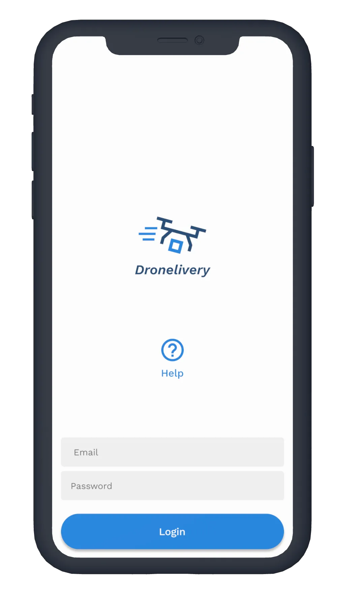
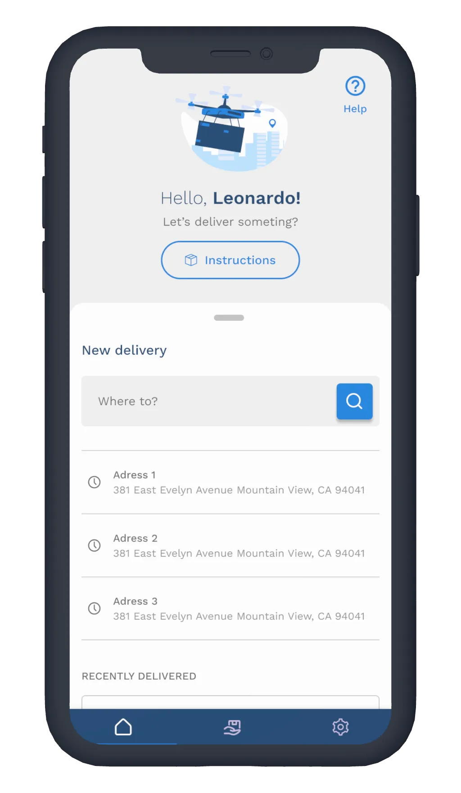
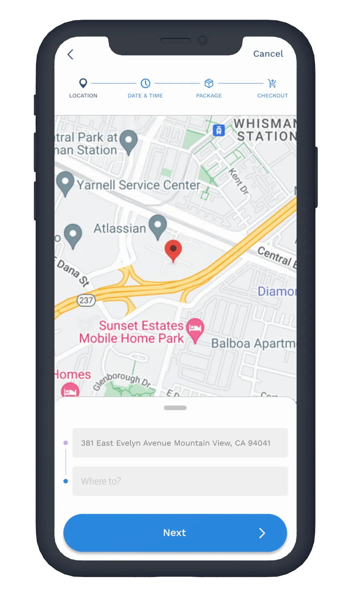
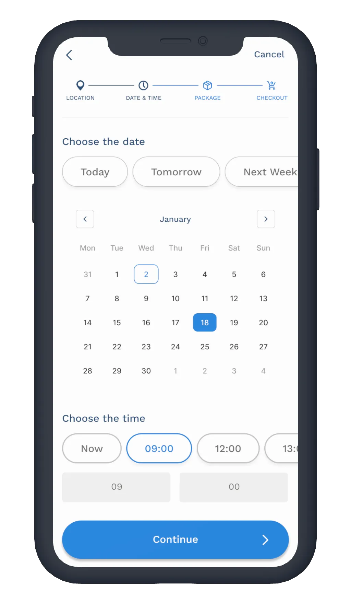
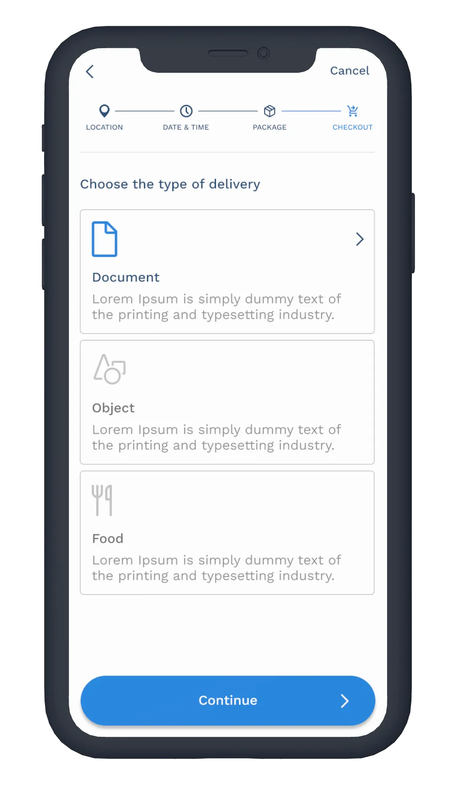
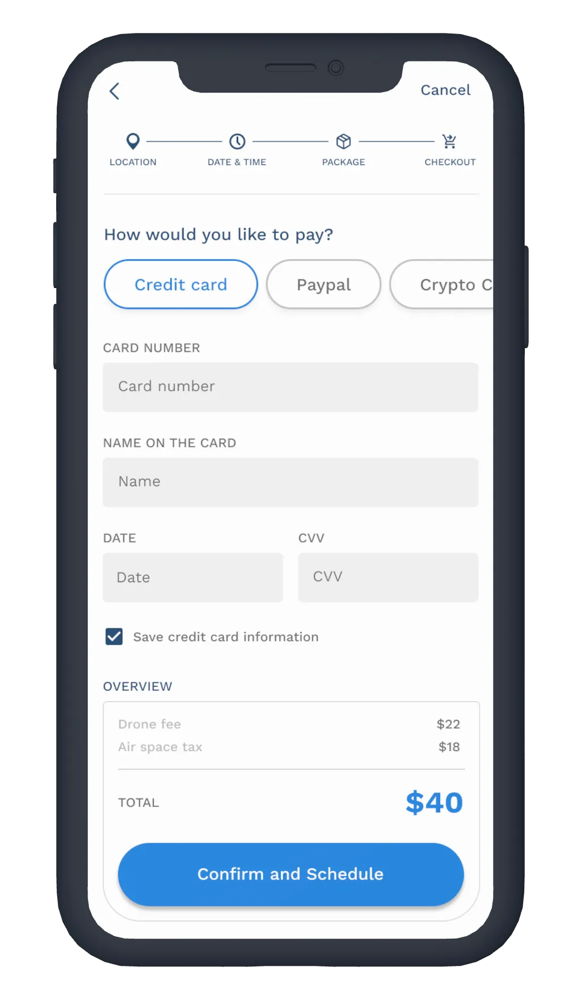
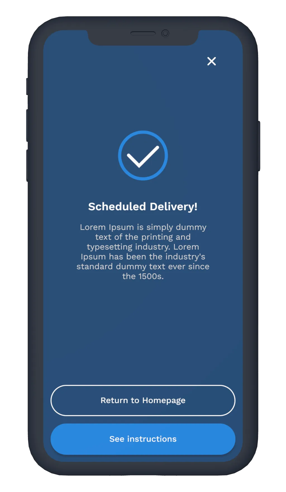
Clear Visual Hierarchy
The interface prioritizes essential information while minimizing visual noise, allowing users to focus on completing their delivery without distraction.
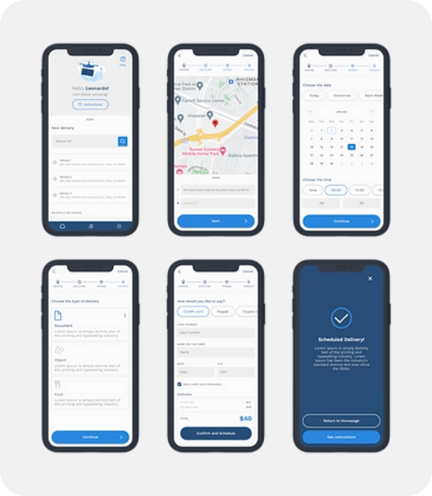
Keeping the user informed
One recurring finding during testing was that users wanted reassurance while interacting with unfamiliar technology. To address this, contextual information and progress indicators were introduced throughout the booking flow, helping users understand what happens before, during, and after scheduling a delivery.
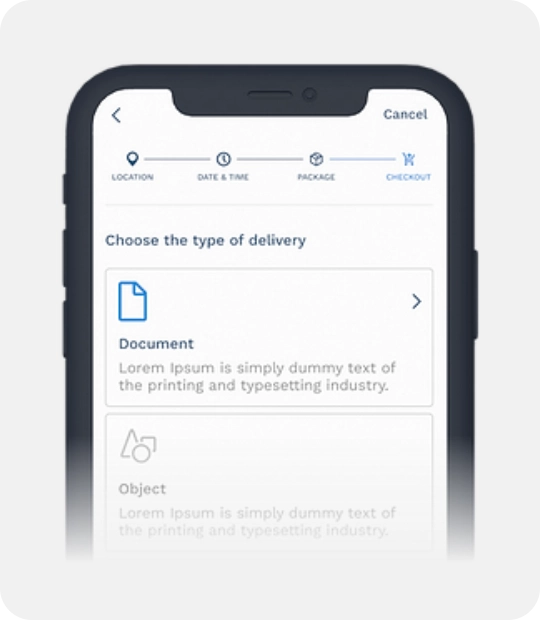
Visual Identity
The visual language reinforces reliability and innovation through a minimal interface, technology-inspired color palette, and modern typography. Together, these elements position drone delivery as a trustworthy professional service rather than an experimental gadget.
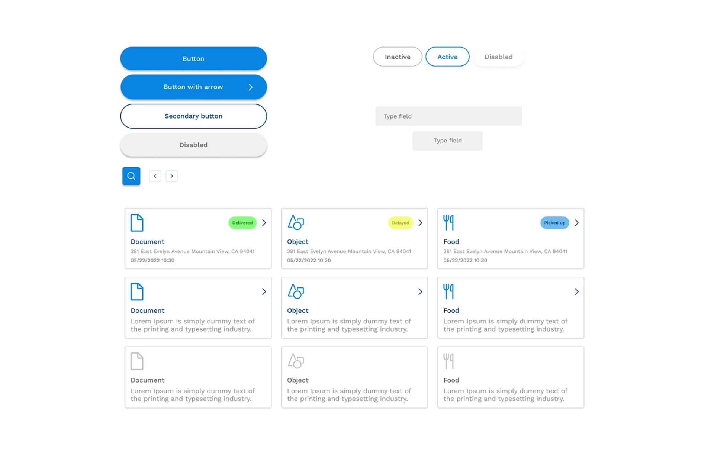
Solution
The final experience focused on three principles:
Guided Booking
Visible progress and contextual guidance reduce uncertainty.

Faster Scheduling
Simplified forms and clear navigation minimize effort.
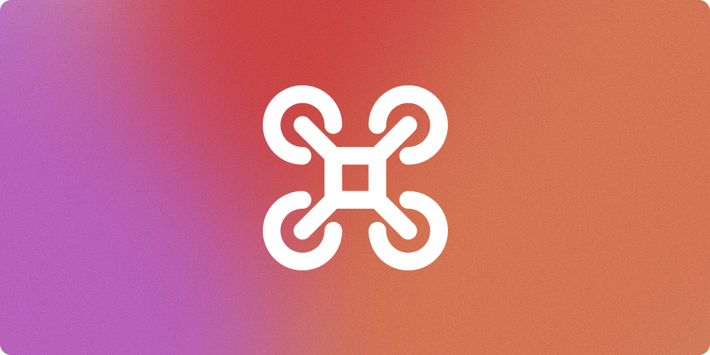
Transparent Delivery
Users receive relevant information before, during, and after scheduling.
Outcome
This project reinforced that designing for emerging technologies isn't only about usability—it's about trust. By providing continuous guidance and simplifying decision-making, the experience helps users feel confident using a service they may have never tried before.